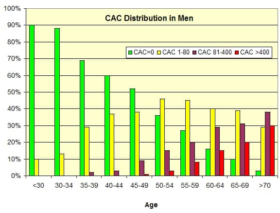
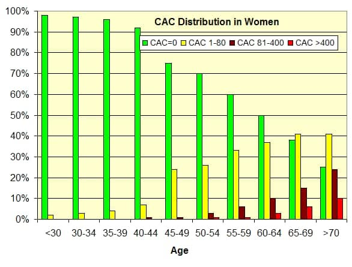

A coronary artery calcium (CAC) scan is a quick, non-contrast CT of the heart that detects calcium in the walls of the coronary arteries. The result, usually the Agatston score, is widely used to estimate the chance of a future heart attack. A score of zero is excellent, and a score over 400 suggests significant risk1. A review shared in the group describes CAC as the most robust predictor of coronary events in people without symptoms, particularly those at intermediate risk2.
The number is easy to over-read in both directions. A zero does not mean there is no plaque, because early plaque is soft and does not show up on the scan34. A high or rising number does not necessarily mean you are getting worse, because treatment can turn dangerous soft plaque into harmless-looking calcium15. This summary explains what the score measures, how to interpret zero, low and high results, and what the group's admins suggest discussing with a doctor next.
What the score measures
Calcified plaque is the older, hardened part of atherosclerosis. The scanner measures the area of each calcium deposit and multiplies it by a density factor of 1, 2, 3 or 4, depending on how bright the deposit looks on the image1. This is a rigid step system rather than a smooth curve, so a borderline deposit that becomes slightly denser can jump from factor 2 to 3 and raise its contribution by 50 percent even if its size barely changes1. In other words, the Agatston score is not the exact volume of calcium in your arteries.
Louis Nervegna explains why the score predicts risk at all: the amount of calcified plaque acts as a proxy for the amount of dangerous soft plaque, which develops into calcified plaque over a long period8. An ACC guidance summary he shared makes the same point from the imaging side: a CAC score reflects only calcified plaque, while CT angiography with AI quantitative plaque analysis can characterize all plaque types, including soft, low-density plaque that is more likely to rupture9.
Louis shared a chart of how CAC scores are distributed across ages10, and an article on a study proposing CAC as a simple marker of overall biological ageing, noting the scan takes seconds and often costs $100 or less11.


Turning a score into risk
Several tools appear in the group:
- The MESA calculator converts a CAC score plus other risk factors into a 10-year risk of heart attack or stroke212.
- The JAMA Patient Page and JAMA Insights pieces shared by Louis say a calcium score helps estimate atherosclerotic cardiovascular risk and inform statin decisions, especially for borderline or intermediate risk people not already taking a statin1314.
- The AHA PREVENT calculator estimates 10- and 30-year risk for ages 30 to 79 without known disease. Louis warns it will underestimate risk for people with significant atherosclerosis or a high calcium score15. A 2026 JAMA analysis found that adding CAC to PREVENT-ASCVD improved prediction only modestly in US adults 45 to 79, supporting selective use in borderline to intermediate risk. Louis adds that a very high CAC should still be treated as high risk whatever a calculator says16.

What counts as "high"
Dr Michael Weintraub's view, shared by Gokhan, is that CAC above 300 is equivalent to prior ASCVD for the risk of future events, so such patients could be considered for secondary-prevention-style treatment: similar risk, similar therapies17. Louis has made a similar claim, that a score above 300 carries the same 10-year prognosis as a prior heart attack, though he gave no source18.
Understanding a score of zero
A zero is genuinely reassuring about the short term. Louis shared a primer noting that a zero is associated with very low risk of events over the following years, but that low is not none3. In MESA data relayed by Louis, over a decade a zero score "trumps" a high Lp(a), and absolute event rates stay low among people with CAC 0 even when Lp(a) is elevated1920. Louis also cites MESA findings that a CAC below 100, hsCRP below 2 mg/L and low visceral fat seemed to protect people with high Lp(a), while warning that this is observational and shows associations, not causation2122.
But the group repeatedly stresses the limits:
- Symptomatic patients. In the Western Denmark Heart Registry, 23,759 patients with suspected coronary disease symptoms had CT angiography; 54% had a CAC of zero, and about half of those with symptomatic blockages were in that group. Soft plaque can grow without calcification, especially in younger people and women62324.
- Timing. Louis notes that it takes 10 to 15 years for soft plaque to begin calcifying, so a 45-year-old with significant soft plaque might not show calcium until about 60, and visible calcium specks can appear even when the score is zero4.
- Early disease. The NEJM REACT study of 16,808 adults aged 18 to 70 found plaque in 57% overall, including 8.7% of men and 6.7% of women aged 18 to 29. Among participants aged 30 to 39 with plaque on CT angiography, 41.8% of men and 48.4% of women had a calcium score of zero, and a high-risk SCORE2 category had only 1.9% sensitivity for silent disease25.
- How common. Louis estimates roughly 10% of people with CAC 0 have significant soft plaque, and a clip he posted states that about a quarter to a third of heart attacks occur in people with a score of zero, with no study cited326.
- Lp(a). Quoting the NLA, Louis relays that Lp(a) is not consistently associated with CAC, so a zero does not eliminate Lp(a)-related risk, particularly in younger adults. This sits alongside the MESA 10-year data above, which focused on a decade of follow-up27.
- Cautionary example. Louis described a lean 35-year-old with CAC 0 who had a heart attack with an LDL of 372 mg/dL on a carnivore diet; it is an anecdote, not evidence28.

A related finding shared by Gokhan: an NEJM study of 16,000 asymptomatic people suggested plaque appears first in the neck and leg arteries in the 20s to 40s, so heart-only scans may miss early disease. He mentions carotid ultrasound (CIMT) and the ankle-brachial index as ways to look elsewhere29.
Low and moderate scores
Low and moderate scores sit on a continuum rather than falling into a single category, and the MESA analysis found that for scores of 1 to 99, high versus low Lp(a) did not change risk much, while above 100 it did1922. Treatment should still follow overall risk, with a calculator and a clinician1214.
Why the score can rise while treatment works
This is the most confusing part for people who track their scan. Gokhan's "calcification paradox" article explains that statins lower LDL and inflammation, depleting the lipid core, and the healing plaque calcifies, turning "Jell-O into concrete". The artery gets safer while the score goes up, partly because denser calcium earns a higher Agatston multiplier130. Louis called it the best article on the subject he had read30.
The trial data are consistent, though Gokhan's evidence review leans on small studies and a retrospective cohort:
- St. Francis Heart Trial. Atorvastatin 20 mg did not reduce CAC progression over four years, yet clinical events fell by 33%5.
- SALTIRE. Atorvastatin 80 mg lowered LDL by about 53%, but annual CAC progression was 26% versus 18% on placebo5.
- BELLES. High and moderate intensity statins showed similar progression of about 11 to 14% in one year5.
- Long-term cohort. In a retrospective veterans analysis, adjusted odds of severe CAC were 1.49 for 0 to 5 years of statin use, 2.38 for 5 to 10 years and 4.48 beyond 10 years, interpreted by Gokhan as ongoing plaque repair, not failure5.
- Plaque composition. A JACC 2022 review shared by Gokhan says that on statins fibrous and calcified plaque volumes appear to increase while non-calcified, fibrofatty and necrotic core volumes decrease31. A meta-analysis of 31 IVUS studies (4,997 patients) linked LDL below 80 mg/dL and HDL above 45 mg/dL to maximal regression, with each 1% reduction in percent atheroma volume tied to 20% lower risk of major adverse cardiac events32.
Show data
| Adjusted odds ratio (log scale) | 95% CI | |
|---|---|---|
| 0–5 years of statin use | 1.49 | – |
| 5–10 years | 2.38 | – |
| More than 10 years | 4.48 | – |
Dr Gil Carvalho's video, summarized by Gokhan, similarly says arterial calcium is a marker of long-standing plaque, not the cause of risk, so chasing a lower number can mislead33. Gerry Kurth, interviewed by Dr Ford Brewer, reported a calcium score that rose quickly at first and then stabilized and reversed after he improved lipids and carbohydrate intake, and he concluded that scores can spike in the short term even as positive changes occur34.
Can calcium be slowed or lowered?
Louis is blunt: there is typically no point trying to do anything about calcified plaque, since it usually poses little danger, and he says the focus should be on reversing or stabilizing soft plaque. He adds that removing calcium might theoretically destabilize a plaque, which is why hard-outcome trials matter more than imaging alone8. With that caveat, several approaches have been studied for slowing the number.
PCSK9 inhibitors
A 2022 randomized trial in 61 coronary patients added alirocumab 75 mg every two weeks to moderate statins; median CAC rose 2.9% versus 10.6% on statins alone over 18 months. A retrospective study by Ikegami (120 patients) found annual progression of 14.3% versus 29.7%53536. Gokhan notes the studies are small and larger trials are needed, and that Lp(a) change correlated with CAC change36. He also cites GLAGOV (evolocumab, LDL 36.6 mg/dL, percent atheroma volume -0.95% versus +0.05%) and PACMAN-AMI as examples of plaque regression without a calcification surge37.
Vitamin K2
Vitamin K2 is hypothesized to activate matrix Gla protein, which inhibits vascular calcification38. The evidence is mixed:
- A 2023 meta-analysis of 14 RCTs (1,533 people) found a pooled difference of -17.3 Agatston units per year (95% CI -34.2 to -0.56). The largest earlier trial (389 men, 720 mcg MK-7 plus 1,000 IU vitamin D for two years) missed significance overall (+203 versus +254), but slowed progression in those with baseline CAC of 400 or more (+288 versus +380)38.
- A 2026 JAMA Cardiology trial in adults with symptomatic coronary disease found 360 mcg/day MK-7 over two years gave a median rise of 49 versus 69 Agatston units, about 29% smaller, without removing existing calcium and without being designed to show fewer heart attacks39. Gokhan notes it mainly limited new calcification within non-calcified plaque, with no effect on stenosis or total plaque volume, and says K2 is not recommended with warfarin without checking with a doctor40.
- Another 2026 report in 398 adults with severe calcification described 196 versus 248 points of progression (about 21% less) on 720 mcg K2 plus 1,000 IU D3, with total plaque volume rising similarly in both groups41.
- Louis shares a summary arguing timing matters: trials in established valve calcification and in dialysis patients were null, while the trial in early coronary disease succeeded42.
- Carvalho and Gokhan caution that no large, powered trial shows K2 reduces heart attacks or strokes, and the main danger is false reassurance and forgoing proven treatments. Gokhan adds that he takes supplements himself but expectations should stay grounded33.
Show data
| Vitamin K2 | Placebo | |
|---|---|---|
| Largest earlier trial, all 389 men (720 mcg + vitamin D) | 203 | 254 |
| Same trial, baseline CAC 400 or more | 288 | 380 |
| 2026 JAMA Cardiology trial (360 mcg, median) | 49 | 69 |
| 2026 report, 398 adults with severe calcification (720 mcg + D3) | 196 | 248 |
Other approaches
Gokhan summarized three small trials of aged garlic extract (about 1.2 g/day) in which CAC progression over a year was lower than placebo, noting two used co-supplements43. Gokhan also summarized individual stories: Tom Seest's score fell from 66 to 42 over three years amid many simultaneous changes, and he admits he does not know which mattered44; Charles Grashow's score fell from 102 to 32 on high-dose statin, ezetimibe, nattokinase and other supplements, which Gokhan labels anecdotal and n=14546. These are anecdotes. Observational data point the other way for some exposures, for example a CARDIA analysis (2,226 young adults) found an animal-based low-carbohydrate diet score tied to higher CAC progression (HR 1.456), while a plant-based score was not47, and higher urinary metal levels were linked to more CAC in MESA48.
Does getting the scan help?
This is contested. In a post Louis shared, two 2026 randomized trials are cited: a Danish trial of about 30,000 men screened with CAC showed no reduction in death, heart attack or stroke at seven years and more serious bleeding, and the US CorCal trial of nearly 6,000 people found event rates identical to risk-calculator-guided care. The USPSTF does not recommend CAC for routine risk assessment in asymptomatic adults. Louis summarizes this as: for some it is a wake-up call, but for the average person it does not seem to change outcomes7. This fits the PREVENT finding that CAC adds only modestly for typical-risk people16.
The group's other posts see value in selected cases: borderline or intermediate risk people deciding on a statin1314, and following a high result with CT angiography and AI plaque analysis, which the ACC guidance suggests re-scanning at intervals of at least 2 to 5 years9. Louis recommends carotid plaque burden ultrasound, which predicted all-cause mortality better than CAC in about 5,700 people over 12.4 years (hazard ratio 1.23 versus 1.15), is cheap and uses no radiation; he says CIMT does not predict risk well495051. Gokhan, by contrast, mentions CIMT as a way to detect early peripheral plaque29. Louis also reminds members that CT scans carry radiation: CAC uses much less than CT angiography but predicts risk less accurately, and the cancer projection study was observational52.
What this means for you
- Ask a doctor to interpret the score alongside LDL, blood pressure, glucose, family history and Lp(a), using a calculator such as MESA or PREVENT121516.
- If your score is 0 but you are young or have symptoms or a strong risk factor, discuss whether further testing, such as CT angiography or carotid ultrasound, is warranted3625.
- If your score is high, Louis says it is not a death sentence but does put you at high risk: his advice is about 30 lb of weight loss where relevant, LDL below 70 mg/dL through diet and medication, a traditional Mediterranean diet, and exercise, while managing all risk factors53.
- Exercise matters at any score. Sports cardiologist Andre La Gerche is quoted as saying that for the same CAC, the fitter person has a much lower heart attack risk over 20 to 25 years; Louis adds that CAC may overestimate risk in endurance athletes545556.
- Gokhan argues that the longer and lower LDL is held, the better, and estimates about a 60% lifetime risk reduction from a 70 mg/dL lowering sustained for 30 years, a figure read from a chart46.
- Judge success by soft plaque and events, not only the number; if you follow plaque, consider quantitative CT angiography rather than relying on CAC89.
- Treat supplements such as K2 as optional extras, not substitutes for proven treatment3340.
Frequently asked questions
My CAC went up on a statin. Did it fail?
Not necessarily. Statins reduced events in trials without slowing CAC, and rising calcium can reflect soft plaque stabilizing. Discuss any rise with your doctor along with your LDL and symptoms15.
Does a zero score mean I can stop worrying?
It means a low short-term risk, not zero. About half of people with symptomatic blockages in a Danish registry had a zero score, and early plaque is often non-calcified2325.
Is a score above 300 the same as having had a heart attack?
Weintraub says the risk of future events is similar to prior ASCVD, which suggests considering secondary-prevention-style treatment17.
Can vitamin K2 reverse my calcium?
Trials suggest it may slow progression, but it did not remove existing calcium, and its effect on heart attacks is unknown3940.
Should everyone get a calcium scan?
Two 2026 trials found no outcome benefit for the average person, and guidelines reportedly give it one job: informing statin decisions at borderline risk7.